SAD – závěrečná zkouška · Aplikace OZ: integrátor, derivátor, usměrňovač – SAD · https://balnerm.github.io/pripravy/sad/zkouska/14_oz_zapojeni.html
Přednáška 4
Aplikace OZ: integrátor, derivátor, usměrňovač, vrcholový detektor
Operační zesilovač neumí jen zesilovat. Když do zpětné vazby nebo na vstup dáme kondenzátor, OZ signál integruje nebo derivuje. Když do zpětné vazby dáme diodu, vznikne přesný usměrňovač, který usměrní i signál menší než 0,7 V, a s kondenzátorem za diodou vrcholový detektor, který si „pamatuje“ nejvyšší napětí. Přednáška ukazuje, jak tato zapojení pracují a jaké mají praktické problémy (saturace, nestabilita, úbytek na diodě).
V akviziční cestě patří přednáška do bloku úprava signálu, před analogově-digitální převod. Slide „Úprava signálu“ jmenuje čtyři témata: integrační zesilovač, derivační zesilovač, usměrňovač a vrcholový detektor. Základní integrátor a derivátor jsou připomenuté hned níže; přednáška na ně navazuje.
Připomenutí ze základů: integrátor a derivátor
Obě zapojení vzniknou z invertujícího zesilovače (P1), když jeden rezistor nahradíme kondenzátorem. Invertující vstup je na virtuální nule, takže proud vstupní součástkou závisí jen na vstupu, a protože do OZ neteče, projde celý zpětnou vazbou. Proud kondenzátorem je \(i = C\,du/dt\) (P1).
Integrátor je zapojení OZ odvozené z invertujícího zesilovače, ve kterém je rezistor ve zpětné vazbě nahrazen kondenzátorem \(C\) (na vstupu zůstává rezistor \(R\)). Výstupní napětí je úměrné časovému integrálu vstupního napětí: \(u_\text{výst}(t) = -\frac{1}{RC}\int u_\text{vst}\,dt\).
výstup „sčítá“ vstup v čase. Stálé vstupní napětí dá na výstupu lineárně rostoucí (klesající) rampu; obdélník se změní na trojúhelník.
Derivátor je zapojení OZ odvozené z invertujícího zesilovače, ve kterém je vstupní rezistor nahrazen kondenzátorem \(C\) (ve zpětné vazbě zůstává rezistor \(R\)). Výstupní napětí je úměrné časové derivaci vstupního napětí: \(u_\text{výst}(t) = -RC\,\frac{du_\text{vst}}{dt}\).
výstup ukazuje, jak rychle se vstup mění. Stálé napětí dá nulu, rampa dá stálé napětí, trojúhelník se změní na obdélník.
Integrátor (R na vstupu, C ve zpětné vazbě) – proud \(u_\text{vst}/R\) nabíjí kondenzátor:
\[ u_\text{výst}(t) = -\frac{1}{RC} \int_0^t u_\text{vst}\,dt + u_\text{výst}(0) \]Derivátor (C na vstupu, R ve zpětné vazbě) – proud \(C\,du_\text{vst}/dt\) teče přes R:
\[ u_\text{výst}(t) = -RC \, \frac{du_\text{vst}}{dt} \]Pro sinusový signál zisk integrátoru klesá o 20 dB/dek (jako dolní propust) a zisk derivátoru o 20 dB/dek roste (jako horní propust):
\[ \begin{aligned} |A_\text{int}| &= \frac{1}{\omega RC} \\ |A_\text{der}| &= \omega RC \end{aligned} \]| \(RC\) | integrační / derivační časová konstanta [s] |
| \(u_\text{výst}(0)\) | počáteční napětí (náboj kondenzátoru na začátku integrace) |
| znaménko − | obě zapojení jsou invertující |

- Integrátor: kladný vstup → výstup lineárně klesá (inverze), záporný → roste; sklon je \(u_\text{vst}/(RC)\).
- Derivátor: výstup je úměrný sklonu vstupu; stálé napětí dá nulu.
- Praktické problémy, které přednáška řeší: integrátor „ujede“ kvůli offsetu do saturace, derivátor zesiluje šum.
Integrační zesilovač – Millerův integrátor
Millerův integrátor je název přednášky pro integrátor z připomenutí výše: invertující zesilovač, který má na vstupu rezistor \(R\) a ve zpětné vazbě kondenzátor \(C\). Podle slidu provádí integraci invertovaného vstupního napětí v čase. Na neinvertujícím vstupu je rezistor \(R\) na zem (stejně velký jako vstupní, aby vstupní proudy OZ vytvořily na obou vstupech stejný úbytek).

Kondenzátor ve zpětné vazbě integrátoru integruje napětí v čase a slouží jako analogová paměť: náboj, který na něm vstupní proud nahromadil, na něm zůstane, a výstupní napětí \(u_o = -u_C\) se proto nemění, dokud je vstupní napětí nulové.
kondenzátor je „kbelík na náboj“. Vstup do něj přilévá nebo z něj ubírá; když vstup přestane, hladina (napětí) zůstane stát. Výstup integrátoru tak ukazuje součet všeho, co na vstup přišlo od začátku integrace.
- Invertující vstup je díky virtuálnímu zkratu na 0 V, rezistorem teče proud \(i(t) = u_i(t)/R\).
- Do vstupu OZ proud neteče, celý proud nabíjí kondenzátor. Napětí na kondenzátoru je náboj lomeno kapacitou: \[ u_C = \frac{q}{C} = \frac{1}{C} \int i(t)\,dt = \frac{1}{C} \int \frac{u_i(t)}{R}\,dt \]
- Levá strana kondenzátoru je na 0 V, pravá na výstupu, takže výstupní napětí je \[ u_o = -u_C \]
| \(u_o(t)\) | výstupní napětí v čase \(t\) od spuštění integrátoru |
| \(u_i(t)\) | vstupní napětí |
| \(RC\) | integrační časová konstanta [s] |
| \(u_o(0)\) | výstupní napětí v čase spuštění integrátoru \(t = 0\) (daná nábojem kondenzátoru na začátku) |
Počáteční stav integrátoru lze zapsat dvěma rovnocennými způsoby. Pomocí napětí kondenzátoru \(u_C(0)\) je znaménko minus, protože \(u_o = -u_C\):
\[ u_o(t) = -\frac{1}{RC} \int_0^t u_i(t)\,dt - u_C(0) \]Pomocí výstupního napětí \(u_o(0)\) je znaménko plus (vzorec výše). Fyzikálně jde o totéž: integrátor pokračuje z napětí, které na kondenzátoru už bylo.
Časové průběhy Millerova integrátoru
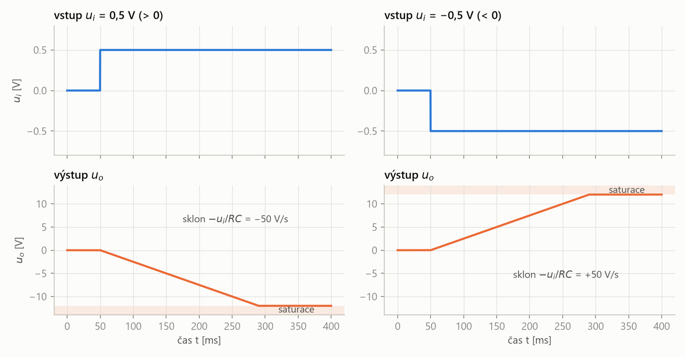
- Kladný vstup → výstup klesá (přímka se sklonem \(-U_i/RC\)), záporný vstup → výstup roste. Integrátor je invertující.
- Výstup nemůže překročit napájení: po dosažení asi ±12 V zůstane v saturaci a integrace končí.
- Bez zásahu by integrátor v saturaci zůstal i po skončení vstupního signálu – proto potřebuje nulovací obvod (níže).
\(R\) = 100 kΩ, \(C\) = 100 nF, na vstupu skok na \(U_i\) = 0,5 V, napájení ±12 V. Časová konstanta:
\[ RC = 10^5 \cdot 10^{-7} = 0{,}01\ \text{s} = 10\ \text{ms} \]1. Rychlost změny výstupu:
\[ \frac{du_o}{dt} = -\frac{U_i}{RC} = -\frac{0{,}5}{0{,}01} = -50\ \text{V/s} \]2. Za 20 ms je na výstupu:
\[ u_o = -50 \cdot 0{,}02 = -1\ \text{V} \]3. Saturace −12 V nastane za:
\[ t = \frac{12\ \text{V}}{50\ \text{V/s}} = 0{,}24\ \text{s} = 240\ \text{ms} \]4. Pokud byl kondenzátor na začátku nabitý tak, že \(u_o(0) = +2\) V, potřebuje výstup urazit 14 V:
\[ t = \frac{14\ \text{V}}{50\ \text{V/s}} = 0{,}28\ \text{s} \]Millerův integrátor s nulovacím obvodem
V průběhu integrace je průběžně integrováno vstupní napětí. Pro zahájení „nové“ integrace je třeba obvod vybít – k tomu slouží nulovací obvod.
Nulovací obvod je spínač (na slidu tranzistor \(T_1\) řízený napětím \(U_G\)) zapojený paralelně ke kondenzátoru ve zpětné vazbě integrátoru. Před začátkem integrace je sepnut, kondenzátor zkratuje, a tím jej vybije; po vypnutí tranzistoru je zahájena integrace.
tlačítko „vynulovat“. Integrátor si pamatuje všechno, co se na vstup dostalo; nulovací obvod paměť smaže, aby se další měření začalo počítat od nuly.
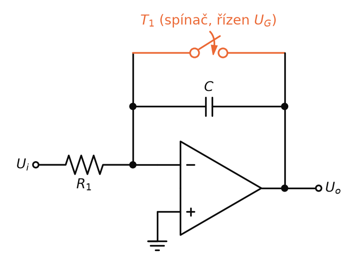
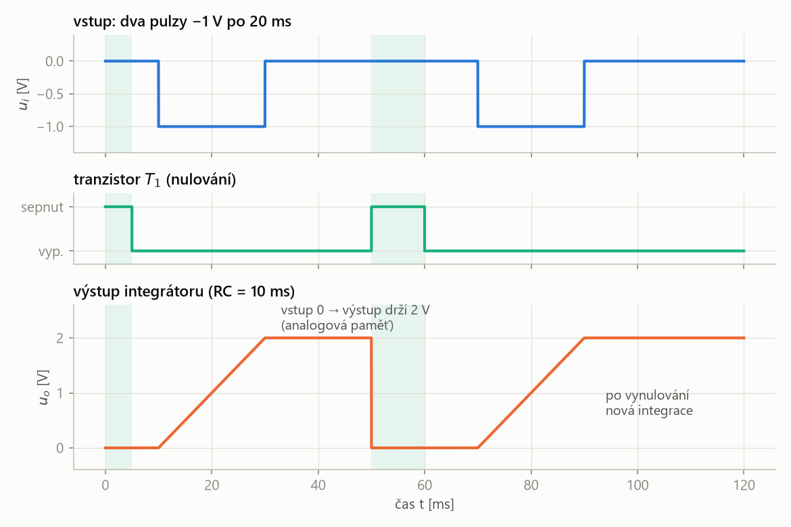
- Během pulzu −1 V výstup roste rychlostí 100 V/s, za 20 ms o 2 V. Po skončení pulzu je vstup nulový a výstup drží 2 V – to je analogová paměť.
- Sepnutím \(T_1\) se kondenzátor zkratuje a výstup spadne na 0 V. Po vypnutí \(T_1\) začne nová integrace od nuly.
Neinvertující integrační zesilovač
Neinvertující integrační zesilovač je zapojení OZ, které integruje vstupní napětí bez změny znaménka:
\[ u_o = \frac{1}{RC} \int u_i(t)\,dt \]
Signál se přivádí přes rezistor \(R\) na neinvertující vstup, ze kterého je kondenzátor \(C\) na zem; invertující vstup má rezistor \(R\) na zem a kondenzátor \(C\) ve zpětné vazbě.
stejný integrátor jako Millerův, jen bez minus: kladný vstup dá rostoucí výstup.
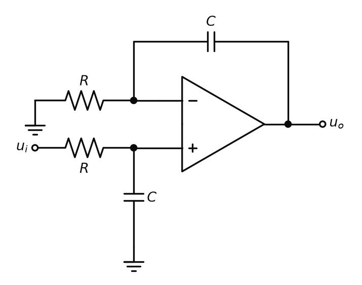
Ve frekvenční oblasti (\(s = j\omega\)) jde o dva bloky za sebou.
1. Článek \(RC\) na neinvertujícím vstupu je dolní propust:
\[ u_+ = \frac{u_i}{1 + sRC} \]2. OZ s \(R\) na zem a \(C\) ve zpětné vazbě je neinvertující zesilovač se zesílením \(1 + Z_2/Z_1\):
\[ \frac{u_o}{u_+} = 1 + \frac{1}{sRC} = \frac{1 + sRC}{sRC} \]3. Vynásobením se člen \((1 + sRC)\) zkrátí:
\[ \frac{u_o}{u_i} = \frac{1}{sRC} \]A \(1/s\) je ve frekvenční oblasti integrál – proto \(u_o = \frac{1}{RC}\int u_i\,dt\). Podmínkou je, že oba rezistory i oba kondenzátory jsou stejné.
Diferenční integrační zesilovač
Diferenční integrační zesilovač integruje obě vstupní napětí rozdílově (diferenčně). Výsledné napětí je
\[ u_o = \frac{1}{RC} \int (u_2 - u_1)\,dt \]
je to neinvertující integrátor, u kterého rezistor invertujícího vstupu nevede na zem, ale na druhý vstup \(u_1\). Integruje se jen rozdíl vstupů, stejná napětí na obou vstupech se odečtou.
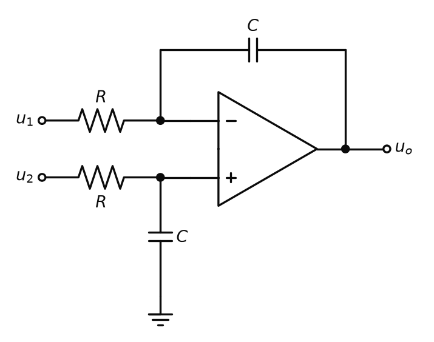
\(RC\) = 10 ms, \(u_1\) = 1 V, \(u_2\) = 1,5 V (stálá). Rozdíl je 0,5 V, výstup roste rychlostí:
\[ \frac{du_o}{dt} = \frac{u_2 - u_1}{RC} = \frac{0{,}5}{0{,}01} = 50\ \text{V/s} \]Za 20 ms:
\[ u_o = 50 \cdot 0{,}02 = 1\ \text{V} \]Kdyby byly oba vstupy 1 V, výstup by se neměnil.
Frekvenční závislost integrátoru
Zapojení je však frekvenčně velmi závislé: s dvojnásobkem frekvence klesá zisk na polovinu – o 6 dB na oktávu. Zisk se počítá stejně jako u invertujícího zesilovače, jen místo odporů dosadíme impedance (vedlejší poznámka na slidu: \(R_\text{in} \approx \bar Z_1 = R\), \(R_\text{ZV} \approx \bar Z_2 = 1/(j\omega C)\)).
| \(\bar A\) | komplexní zisk (přenos) zesilovače |
| \(\bar Z_1\), \(\bar Z_2\) | impedance na vstupu (\(R\)) a ve zpětné vazbě (\(1/(j\omega C)\)) |
| \(\omega\) | úhlová frekvence, \(\omega = 2\pi f\) [rad/s] |
| \(j\) | imaginární jednotka; \(j\) v čitateli = výstup předbíhá vstup o 90° |
Oktáva je frekvenční interval, ve kterém se frekvence zdvojnásobí (\(f \to 2f\)). Sklon 6 dB na oktávu znamená, že se zisk při každém zdvojnásobení frekvence změní dvakrát:
\[ 20 \log_{10} 2 \approx 6{,}02\ \text{dB} \]
jiný zápis téhož sklonu jako 20 dB na dekádu (desetinásobek frekvence). Integrátor má −6 dB/okt (zisk klesá), derivátor +6 dB/okt (zisk roste).
| \(f\) [Hz] | \(\omega = 2\pi f\) [rad/s] | \(|A| = 1/(\omega RC)\) | zisk [dB] |
|---|---|---|---|
| 159,2 | 1000 | 1 | 0 |
| 318,3 | 2000 | 0,5 | −6,02 |
| 636,6 | 4000 | 0,25 | −12,04 |
Každé zdvojnásobení frekvence zisk půlí – o 6 dB.
Derivační zesilovač
Derivační zesilovač je derivátor z připomenutí na začátku kapitoly. Podle slidu provádí derivaci invertovaného vstupního signálu podle času. Na vstupu je připojen kondenzátor, který lépe propouští vyšší kmitočty a nepropouští stejnosměrnou složku – derivace konstanty je nula (\(c' = 0\)).

V čase (proud kondenzátorem \(i_C = C\,du_i/dt\) teče celý přes \(R\)):
\[ u_o = -R \cdot i_C = -RC\,\frac{du_i}{dt} \]Ve frekvenční oblasti:
\[ \bar A_d = -\frac{\bar Z_2}{\bar Z_1} = -j\omega RC \]| \(i_C\) | proud kondenzátorem na vstupu |
| \(du_i/dt\) | rychlost změny vstupního napětí [V/s] |
| \(\bar Z_1 = 1/(j\omega C)\) | impedance kondenzátoru na vstupu |
| \(\bar Z_2 = R\) | rezistor ve zpětné vazbě |
| \(|\bar A_d| = \omega RC\) | zisk roste s frekvencí: +6 dB/okt |
Ošetření nestability derivačního zesilovače
Stejně jako u integrujícího zesilovače, resp. naopak, dochází ke zvýšení zisku o 6 dB na oktávu (při každém zdvojnásobení frekvence). Vysoké frekvence mohou způsobit nestabilitu OZ (resp. fázový posun proudu na vstupu).
Zisk derivátoru roste s frekvencí neomezeně, ale zisk samotného OZ s frekvencí klesá (GBW, P2). Někde nahoře se obě křivky setkají a fázové posuvy kondenzátoru na vstupu a vnitřku OZ se sečtou až na 180°. Záporná zpětná vazba se pak změní na kladnou a zapojení se rozkmitá. K tomu derivátor nejvíc zesiluje vysokofrekvenční šum.
Toto lze ošetřit zapojením \(R_1\) pro omezení zisku (zeslabení vstupu) a \(C_1\) do zpětné vazby pro kmitočtově závislé omezení zisku. Vazba \(R \cdot C_1\) frekvenčně omezí horní pásmo derivačního zesilovače – zesilovač se stává derivačně-integračním.
Derivačně-integrační zesilovač je derivační zesilovač ošetřený proti nestabilitě: do série se vstupním kondenzátorem \(C\) je zařazen rezistor \(R_1\) a paralelně k rezistoru \(R\) ve zpětné vazbě kondenzátor \(C_1\). Pod zlomovou frekvencí \(\omega_K\) derivuje, kolem ní zesiluje (propust) a nad ní integruje.
derivátor, kterému jsme „přistřihli“ zisk na vysokých frekvencích. Pomalé změny derivuje jako dřív, ale šum a rychlé zákmity už nezesiluje, takže se nerozkmitá.
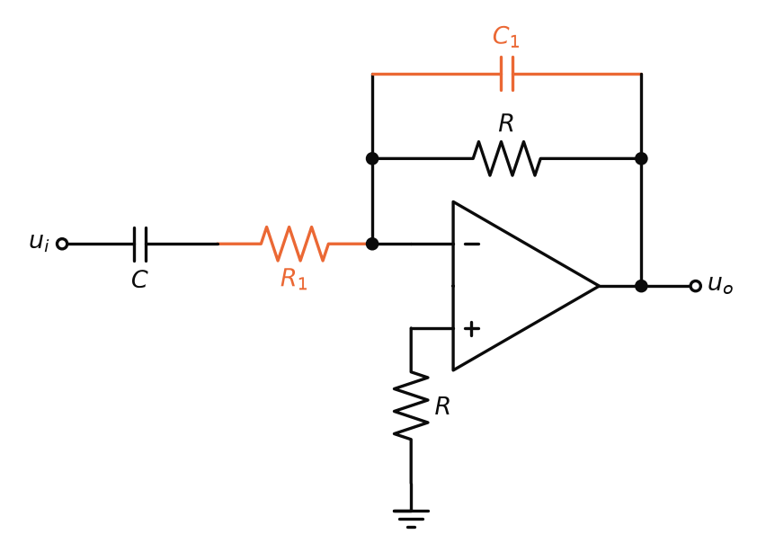
| \(\omega_K\) | zlomová úhlová frekvence – střed propustného pásma [rad/s] |
| \(R_1 C\) | časová konstanta vstupu (sériové \(R_1\) a \(C\)) |
| \(R C_1\) | časová konstanta zpětné vazby (paralelní \(R\) a \(C_1\)); součástky se volí tak, aby obě byly stejné |
Asymptoty zisku (vlastní odvození z \(|\bar Z_2 / \bar Z_1|\)):
- pod \(\omega_K\): \(|A| \approx \omega C R\) – derivace, +6 dB/okt,
- kolem \(\omega_K\): \(|A| \approx R / R_1\) – propust, zisk omezený rezistorem \(R_1\),
- nad \(\omega_K\): \(|A| \approx 1/(\omega C_1 R_1)\) – integrace, −6 dB/okt.
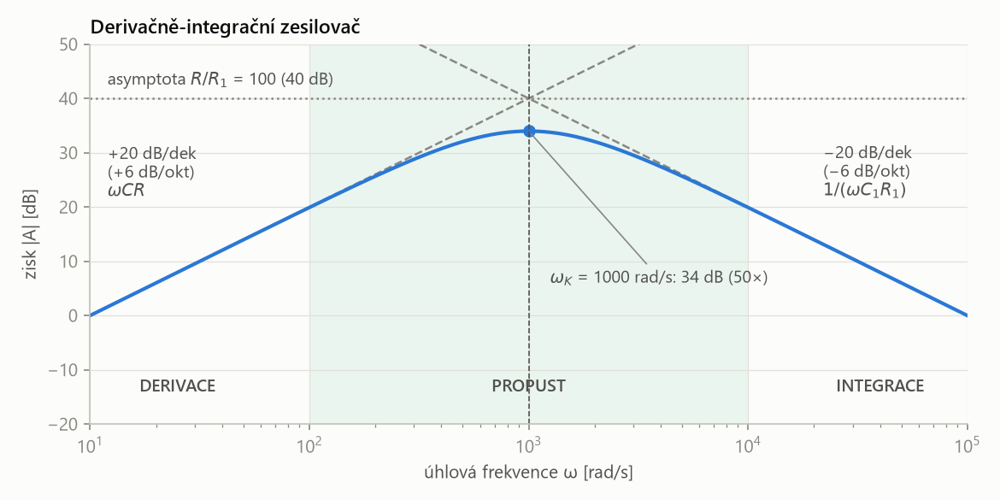
- Vlevo zisk roste (+6 dB/okt) – obvod derivuje. Vpravo klesá (−6 dB/okt) – obvod integruje, takže vysoké frekvence (šum) už nezesiluje.
- Uprostřed je propust: asymptoty se protnou v \(R/R_1\) = 100 (40 dB). Skutečná křivka je ve vrcholu o 6 dB níž (50×, 34 dB), protože se v \(\omega_K\) sejdou dva zlomy po 3 dB.
- Derivátor tedy derivuje jen signály pod \(\omega_K\) – frekvence \(\omega_K\) se volí nad nejvyšší užitečnou frekvencí signálu.
\(R\) = 100 kΩ, \(C\) = 1 µF, zisk v propustném pásmu omezíme na 100 rezistorem \(R_1\) = 1 kΩ.
1. Zlomová frekvence ze vstupu:
\[ \omega_K = \frac{1}{R_1 C} = \frac{1}{10^3 \cdot 10^{-6}} = 1000\ \text{rad/s} \] \[ f_K = \frac{\omega_K}{2\pi} \approx 159{,}2\ \text{Hz} \]2. Kondenzátor do zpětné vazby, aby \(R C_1 = R_1 C\):
\[ C_1 = \frac{R_1 C}{R} = \frac{10^3 \cdot 10^{-6}}{10^5} = 10\ \text{nF} \]3. Kontrola (přesný výpočet z impedancí): při \(\omega\) = 100 rad/s je zisk 9,90 (asymptota \(\omega CR\) = 10), při \(\omega_K\) je 50 (34,0 dB), při 10 000 rad/s opět 9,90.
Klesající asymptota je \(1/(\omega C_1 R_1)\). Kontrola: v \(\omega_K = 1/(R_1 C)\) dává
\[ \frac{1}{\omega_K C_1 R_1} = \frac{C}{C_1} = \frac{R}{R_1} \]tedy stejný zisk jako propust, takže obě asymptoty na sebe navazují (v příkladu 100).
Reakce derivátoru na trojúhelník
Ukázka na slidu: na vstupu je trojúhelníkový průběh napětí a zapojení reaguje na změny. Dochází tak k „modulaci“ průběhu se změnami (např. trojúhelníků) na pravoúhlé signály, které je snadné čítat nebo detekovat hrany (RE – rising edge, náběžná hrana; FE – falling edge, sestupná hrana).
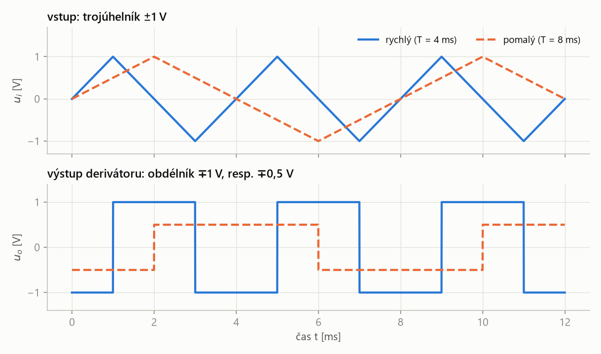
- Výstup je obdélník: dokud trojúhelník roste, je výstup záporný (derivátor je invertující), když klesá, kladný. Hrany obdélníku jsou přesně ve vrcholech trojúhelníku.
- Výška obdélníku udává rychlost změny, ne velikost signálu: rychlý trojúhelník (1000 V/s) dá ∓1 V, pomalý (500 V/s) jen ∓0,5 V.
Trojúhelník ±1 V s periodou 4 ms urazí 2 V za půl periody (2 ms):
\[ \frac{du_i}{dt} = \frac{2\ \text{V}}{2\ \text{ms}} = 1000\ \text{V/s} \] \[ u_o = -RC\,\frac{du_i}{dt} = -10^{-3} \cdot 1000 = -1\ \text{V} \]Při periodě 8 ms je sklon poloviční (500 V/s) a výstup ∓0,5 V.
Této reakce na změny lze využít v aplikaci např. při měření rychlosti vibrací (derivace polohy podle času je rychlost), tedy v aplikaci měření rychlých změn v pomalých signálech.
Usměrňovač
Použití klasického diodového usměrňovače na malých signálech by vedlo k deformaci signálu. Kromě malé (vstupní) impedance, která zatěžuje zdroj signálu, se projevuje i napěťový práh PN přechodu.
Aby bylo jasné, odkud práh pochází a co s ním OZ udělá, nejdřív krátká vsuvka o samotné diodě.
Vsuvka: dioda a její VA charakteristika
Dioda je polovodičová součástka se dvěma vývody, anodou (A) a katodou (K), tvořená PN přechodem. Proud vede jen jedním směrem: v propustném směru (anoda kladnější než katoda alespoň o prahové napětí) proud teče, v závěrném směru (katoda kladnější než anoda) prakticky neteče.
elektrický „jednosměrný ventil“. Šipka ve schematické značce ukazuje směr, kterým proud projde. Toho využívá usměrňovač: půlvlnu jedné polarity propustí, druhou zablokuje.
- Polovodič typu P má přebytek kladných nosičů náboje (děr), typ N přebytek volných elektronů.
- Na jejich styku se díry a elektrony navzájem „vyruší“ a vznikne tenká vrstva bez volných nosičů – hradlová (ochuzená) vrstva. Ta působí jako potenciálová bariéra, u křemíku asi 0,6 – 0,7 V.
- Propustný směr (+ na P, − na N): vnější napětí bariéru snižuje. Jakmile ji překoná, nosiče přes přechod volně přecházejí a proud prudce roste.
- Závěrný směr (+ na N, − na P): napětí bariéru ještě zvětší a teče jen nepatrný závěrný proud. Při velkém závěrném napětí nastane průraz – toho záměrně využívá Zenerova dioda (P3).
VA (voltampérová) charakteristika je graf závislosti proudu procházejícího součástkou (nebo obvodem) na napětí, které je na ni přivedeno, \(I = f(U)\).
„portrét“ součástky. Rezistor má přímku (Ohmův zákon), dioda zalomenou křivku: vlevo skoro nulový proud, vpravo za prahem prudký nárůst.
| \(I\) | proud diodou (kladný v propustném směru) |
| \(U\) | napětí mezi anodou a katodou |
| \(I_S\) | saturační (závěrný) proud, velmi malý – u malé křemíkové diody řádově \(10^{-14}\) A |
| \(n\) | činitel ideality, 1 až 2 |
| \(U_T\) | tepelné napětí, při pokojové teplotě asi 26 mV |
Proud roste s napětím exponenciálně: při \(n = 1\) se zvýší desetkrát na každých asi 60 mV. Proto se zdá, že dioda má ostrý práh – pod 0,5 V teče jen několik µA, kolem 0,65 V už miliampéry.
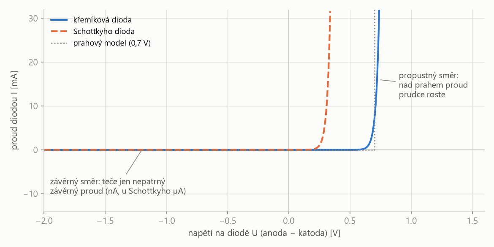
- Charakteristika je silně nelineární: v závěrném směru i v propustném směru pod prahem je proud prakticky nulový, nad prahem roste strmě vzhůru.
- Na vedoucí diodě je proto skoro stálé napětí (asi 0,65 – 0,7 V), ať jí teče 1 mA, nebo 30 mA. V příkladech se počítá s prahovým modelem (tečkovaně): do 0,7 V dioda nevede, nad ním na ní zůstane 0,7 V.
- Schottkyho dioda má stejný tvar křivky, jen posunutý k nižšímu napětí (asi 0,25 V).
Napěťový práh PN přechodu je napětí v propustném směru (u křemíkové diody asi 0,35 – 0,7 V), pod kterým dioda prakticky nevede proud. Teprve nad ním proud diodou prudce roste.
dioda je „dveře se pružinou“: dokud signál netlačí aspoň 0,7 V, neprojde nic. Signál 0,5 V obyčejná dioda vůbec neusměrní a signálu 1 V „ukousne“ 0,7 V.
Schottkyho dioda je dioda s přechodem kov–polovodič, která má malý úbytek napětí v propustném směru (asi 0,1 – 0,3 V).
dioda s „lehčí pružinou“. Ani ona ale práh neodstraní úplně – to dokáže až zapojení s OZ.
Jak se VA charakteristika změní, když diodu zapojíme do zpětné vazby OZ, a jak vypadá u dvoucestného usměrňovače, ukazuje obr. P4.17 na konci oddílu o usměrňovačích.
Usměrňovač s OZ
Usměrňovač s OZ (precizní, aktivní usměrňovač) je zapojení, ve kterém je dioda zapojena do obvodu operačního zesilovače, takže se usměrní i napěťově malé signály. Vysoká vstupní impedance OZ nezatíží vstupní signál a k jeho usměrnění dochází na výstupu, ve zpětné vazbě, nebo v kaskádě mezi více OZ.
OZ „přidá“ diodě přesně tolik napětí, kolik potřebuje na otevření. Zpětná vazba hlídá výstup, ne výstup OZ, takže úbytek na diodě se ve výsledku neprojeví. Výhodné je navíc použít diody s malým úbytkem, např. Schottkyho.
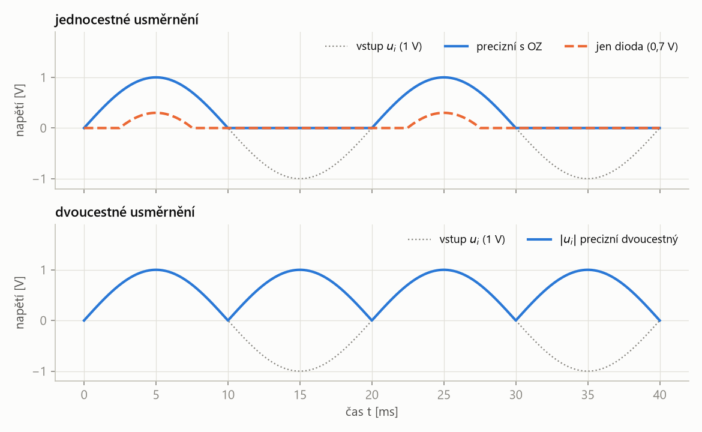
- Samotná dioda propustí jen to, co je nad prahem: z půlvlny 1 V zbude špička 0,3 V a změní se i tvar. Signál pod 0,7 V by zmizel úplně.
- Usměrňovač s OZ propustí celou kladnou půlvlnu (jednocestný), nebo udělá absolutní hodnotu \(|u_i|\) (dvoucestný).
Jednocestný usměrňovač
Jednocestný usměrňovač propustí na výstup jen jednu polaritu vstupního signálu (jednu půlvlnu); druhou polaritu zablokuje a výstup je při ní nulový. V zapojení ze slidu je dioda \(D\) mezi výstupem OZ a zátěží \(R_L\) a zpětná vazba se bere až za diodou.
„ventil“, který pustí jen kladné půlvlny. Protože OZ hlídá napětí za diodou, propustí i milivoltové signály celé.
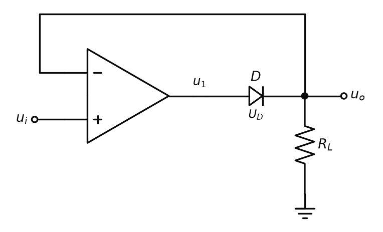
- \(u_i > 0\): výstup OZ \(u_1\) jde nahoru, dioda se otevře a obvod je sledovač: \(u_o \approx u_i\). OZ si sám nastaví \(u_1 = u_o + U_D\), tedy o úbytek diody výš.
- \(u_i < 0\): výstup OZ jde dolů, dioda D je v závěrném směru. \(u_o\) by pak mohl tvořit jen výstupní proud OZ přes diodu, ten je však (ideálně) nulový – přes \(R_L\) neteče proud a \(u_o = 0\).
Reálnou hodnotu zesílení ovlivňuje úbytek \(U_D\). Z \(u_1 = A\,(u_i - u_o)\) a \(u_1 = u_o + U_D\) plyne vztah ze slidu:
\[ u_i = \frac{U_D}{A} + \frac{u_o}{A} + u_o \]Pro výstup (vlastní úprava):
\[ u_o = \frac{A\,u_i - U_D}{A + 1} \approx u_i - \frac{U_D}{A} \]| \(u_i\), \(u_o\) | vstupní a výstupní napětí |
| \(U_D\) | úbytek na diodě v propustném směru (0,35 – 0,7 V, Schottky 0,1 – 0,3 V) |
| \(A\) | zesílení OZ bez zpětné vazby (např. \(10^5\)); práh diody se jím dělí |
\(A = 10^5\), \(U_D\) = 0,7 V, na vstupu \(u_i\) = 10 mV.
1. Efektivní práh diody:
\[ \frac{U_D}{A} = \frac{0{,}7}{10^5} = 7\ \mu\text{V} \]2. Výstup:
\[ u_o = \frac{10^5 \cdot 0{,}01 - 0{,}7}{10^5 + 1} \approx 9{,}993\ \text{mV} \]3. Výstup OZ je o úbytek diody výš:
\[ u_1 = u_o + U_D \approx 0{,}710\ \text{V} \]Samotná dioda by signál 10 mV vůbec nepropustila, s OZ projde s chybou 7 µV.
Jednocestný usměrňovač – různá řešení
Slide ukazuje další dvě zapojení (jen schémata a průběhy). Obě vycházejí z invertujícího zesilovače s diodami ve zpětné vazbě; rozbor je vlastní.
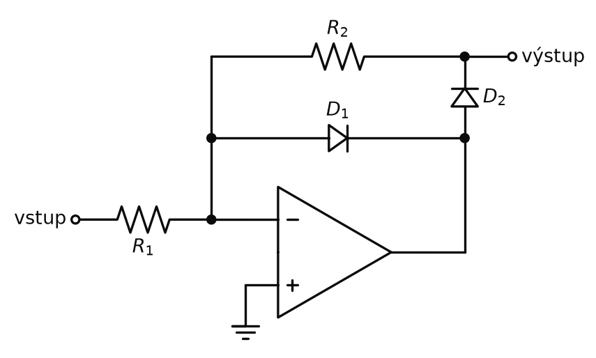
- Vstup kladný: výstup OZ jde do záporu, otevře se \(D_1\) a uzavře zpětnou vazbu; \(D_2\) je zavřená. Výstupní svorka je přes \(R_2\) spojena s virtuální nulou → výstup 0 V.
- Vstup záporný: výstup OZ jde do kladu, \(D_1\) se zavře, otevře se \(D_2\). Obvod je invertující zesilovač: \[ u_\text{výst} = -\frac{R_2}{R_1}\,u_\text{vst} > 0 \]
- Výstupem jsou tedy kladné půlvlny (invertované záporné půlvlny vstupu). Výhoda proti obr. P4.13 (nad rámec slidu): OZ má zpětnou vazbu vždy uzavřenou přes jednu z diod, nikdy nejde do saturace, a proto je rychlejší.
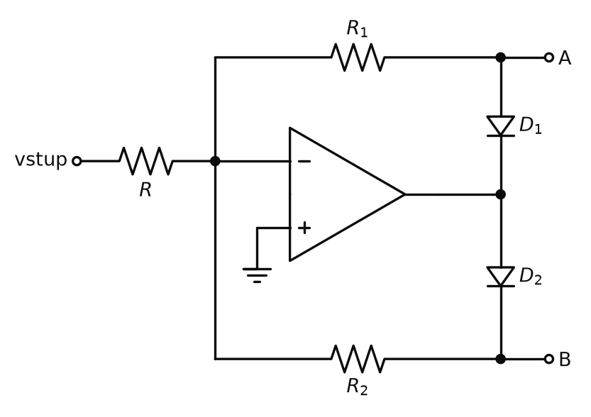
- Vstup kladný: výstup OZ jde do záporu, vede \(D_1\): \(u_A = -\frac{R_1}{R}\,u_\text{vst}\) (záporné půlvlny), \(D_2\) zavřená, \(u_B = 0\).
- Vstup záporný: vede \(D_2\): \(u_B = -\frac{R_2}{R}\,u_\text{vst}\) (kladné půlvlny), \(u_A = 0\).
Precizní dvoucestný usměrňovač
Precizní dvoucestný usměrňovač je zapojení s OZ, jehož výstupní napětí je při obou polaritách vstupního napětí kladné a rovné absolutní hodnotě vstupu, \(u_o = |u_i|\). Zapojení ze slidu má tři OZ: OZ1 a OZ3 tvoří napěťové sledovače, OZ2 invertuje příchozí napětí.
„převracečka“ záporných půlvln: kladné projdou beze změny, záporné se otočí nahoru. Díky OZ to funguje i pro signály v milivoltech.
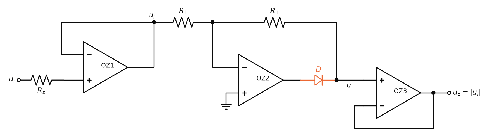
- OZ1 (sledovač) má velký vstupní odpor – nezatíží zdroj signálu s vnitřním odporem \(R_s\) a na svém výstupu dá \(u_i\).
- Je-li \(u_i\) záporné: výstup OZ2 jde do kladu, dioda D je v propustném směru a napětí projde na OZ3. OZ2 je invertor se dvěma \(R_1\) (zesílení −1): \[ u_+ = -u_i = |u_i| \]
- Je-li \(u_i\) kladné: výstup OZ2 jde do záporu, D je v závěrném směru a napětí projde přímo přes \(R_1\). Do OZ3 neteče proud, na obou \(R_1\) tedy není úbytek: \[ u_+ = u_i = |u_i| \]
- OZ3 (sledovač) přenese \(u_+\) na výstup, aniž by zátěž zatížila cestu přes rezistory \(R_1\).
| \(u_i\) | vstupní napětí (libovolné polarity) |
| \(u_o\) | výstupní napětí, vždy kladné |
1. \(u_i = -0{,}3\) V: D vede, OZ2 invertuje:
\[ u_+ = -\frac{R_1}{R_1} \cdot (-0{,}3) = 0{,}3\ \text{V} \]2. \(u_i = +0{,}3\) V: D nevede, proud rezistory neteče:
\[ u_+ = u_i = 0{,}3\ \text{V} \]V obou případech \(u_o\) = 0,3 V. Obyčejný diodový můstek by při 0,3 V nepropustil nic (dvě diody v sérii, asi 1,4 V).
Jak se změní VA charakteristika: kompenzace OZ a dvoucestné usměrnění
Usměrňovač můžeme brát jako celek a nakreslit jeho VA charakteristiku: na vodorovné ose vstupní napětí \(u_i\), na svislé proud zátěží \(I_L = u_o / R_L\). Srovnáme samotnou diodu s diodou ve zpětné vazbě OZ a diodový můstek s precizním dvoucestným usměrňovačem.
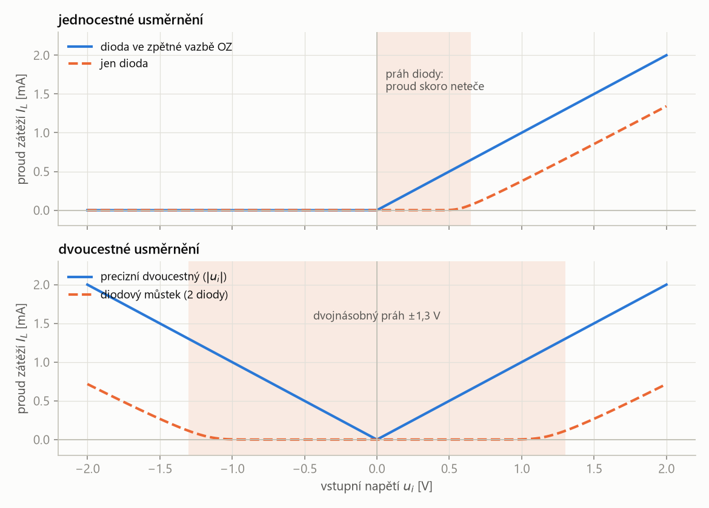
- Kompenzace OZ: zlom charakteristiky se posune z asi 0,7 V na \(U_D/A \approx 7\ \mu\text{V}\), tedy prakticky do nuly. Nad ním je charakteristika přímka \(I_L = u_i/R_L\) bez zaoblení – zapojení se chová jako ideální dioda (nulový práh, v závěrném směru nulový proud).
- Úbytek na diodě přitom nezmizel: OZ ho jen „doplatí“ tím, že má svůj výstup o \(U_D\) výš (\(u_1 = u_o + U_D\)). Na zátěži se proto neprojeví.
- Dvoucestné usměrnění: záporná polarita se už neblokuje, ale převrací. Charakteristika je souměrná podle svislé osy a má tvar písmene V, \(I_L = |u_i|/R_L\).
- Diodový můstek má také tvar V, ale proud jde vždy přes dvě diody v sérii, takže se prahy sečtou: vzniká mrtvé pásmo asi ±1,3 V, kde neteče nic. Precizní dvoucestný usměrňovač má zlom přímo v nule.
| zapojení | \(u_i = +1\) V | \(u_i = -1\) V |
|---|---|---|
| samotná dioda | 0,38 mA | 0 |
| dioda ve zpětné vazbě OZ | 1,00 mA | 0 |
| diodový můstek | 0,003 mA | 0,003 mA |
| precizní dvoucestný | 1,00 mA | 1,00 mA |
U samotné diody zbude na zátěži jen asi 0,38 V, zbytek „spolkne“ dioda. U zapojení s OZ (vztah jednocestného usměrňovače):
\[ u_o = \frac{10^5 \cdot 1 - 0{,}7}{10^5 + 1} \approx 0{,}99999\ \text{V} \]Můstek při 1 V prakticky nevede, protože je pod součtem dvou prahů.
Vrcholový detektor
Vrcholový detektor je zapojení s OZ, diodou a kondenzátorem, které slouží k detekci a zapamatování si předchozího vyššího napětí na vstupu. Kondenzátor se přes diodu dobíjí na vrcholovou hodnotu vstupního napětí a dioda mu nedovolí se zpět vybít.
„ručička maxima“ na teploměru: ukazuje nejvyšší hodnotu, kterou signál od posledního vynulování dosáhl. Používá se např. k měření amplitudy signálu.
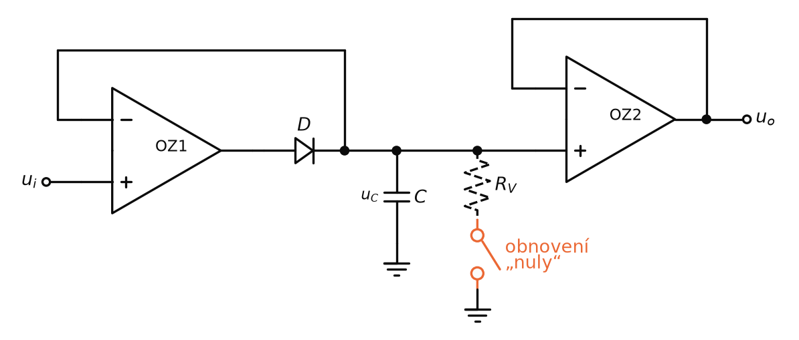
- Je-li \(u_i > u_C\): dioda je otevřena, dobíjí se C na vrcholovou hodnotu napětí. Zpětná vazba OZ1 se bere až za diodou, takže \(u_C = u_i\) přesně (úbytek diody se neprojeví).
- Je-li \(u_i < u_C\): dioda D je v závěrném směru, kondenzátor C je vybíjen pouze vnitřním odporem a odporem OZ2 (\(R_{OZ2} \approx 10^{12}\ \Omega\)). Napětí na C se tedy prakticky nemění.
- OZ2 je sledovač: na výstup dá \(u_o = u_C\) a kondenzátor přitom nezatíží.
- Obnovení „nuly“: sepnutím spínače se \(u_C\) vybije přes \(R_V\) do GND a detektor začne hledat nový vrchol.
Obnovení nuly je vybíjecí obvod vrcholového detektoru, který po sepnutí spínače vybíjí napětí kondenzátoru \(u_C\) přes rezistor \(R_V\) do GND.
„vynulování ručičky maxima“ – stejná myšlenka jako nulovací obvod integrátoru. \(R_V\) omezí vybíjecí proud, aby spínač nezatížil kondenzátor zkratem.
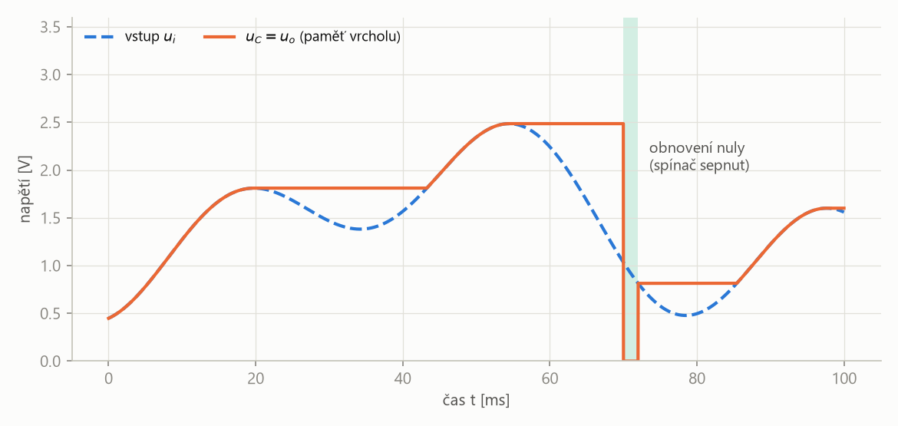
- Když vstup roste nad dosavadní maximum, \(u_C\) ho sleduje. Když vstup klesá, \(u_C\) drží poslední vrchol (vodorovné úseky – na slidu označené šipkami).
- Rozdíl mezi vstupem a \(u_C\) v době držení je rozdílové napětí OZ1 \(|u_d|\) (na slidu).
- Menší vrchol po větším se nezaznamená – detektor zná jen maximum. Po obnovení nuly začne znovu od nuly.
Srovnání zapojení
| zapojení | klíčové součástky | výstup | použití, problém |
|---|---|---|---|
| Millerův integrátor | \(R\) na vstupu, \(C\) ve ZV | \(-\frac{1}{RC}\int u_i\,dt\) | saturace → nulovací obvod (T1) |
| neinvertující integrátor | \(RC\) na +, \(R\) na zem a \(C\) ve ZV na − | \(+\frac{1}{RC}\int u_i\,dt\) | integrace bez inverze |
| diferenční integrátor | jako neinvertující, \(R\) na − ze vstupu \(u_1\) | \(\frac{1}{RC}\int (u_2 - u_1)\,dt\) | −6 dB/okt |
| derivátor | \(C\) na vstupu, \(R\) ve ZV | \(-RC\,\frac{du_i}{dt}\) | +6 dB/okt → nestabilita, šum |
| derivačně-integrační | + \(R_1\) v sérii s \(C\), \(C_1 \parallel R\) | derivace pod \(\omega_K\) | ωK = 1/(R1C) = 1/(RC1) |
| jednocestný usměrňovač | D ve zpětné vazbě | jedna půlvlna | práh UD/A místo UD |
| dvoucestný usměrňovač | OZ1, OZ3 sledovače, OZ2 invertor s D | \(|u_i|\) | malé signály obou polarit |
| vrcholový detektor | OZ1 + D nabíjí C, OZ2 sledovač | maximum \(u_i\) | obnovení nuly přes RV |
„Millerův integrátor je invertující zesilovač s kondenzátorem ve zpětné vazbě. Proud \(u_i/R\) nabíjí kondenzátor, ten slouží jako analogová paměť a výstup je \(-\frac{1}{RC}\int u_i\,dt\) plus počáteční stav. Při stálém vstupu výstup lineárně roste nebo klesá až do saturace, proto je paralelně ke kondenzátoru tranzistor, který ho před novou integrací vybije. Existuje i neinvertující a diferenční integrátor, který integruje rozdíl \(u_2 - u_1\); zisk integrátoru klesá 6 dB na oktávu. Derivátor má kondenzátor na vstupu, výstup je \(-RC\,du_i/dt\) a zisk roste 6 dB na oktávu, takže je nestabilní a zesiluje šum. Ošetří se rezistorem \(R_1\) v sérii s kondenzátorem a kondenzátorem \(C_1\) paralelně k \(R\) – vznikne derivačně-integrační zesilovač, který nad \(\omega_K\) integruje. Diodový usměrňovač má práh 0,7 V, proto se malé signály usměrňují s OZ: dioda je ve zpětné vazbě a práh se zmenší \(A\)-krát. Precizní dvoucestný usměrňovač dává \(|u_i|\). Vrcholový detektor nabíjí přes diodu kondenzátor na maximum vstupu, dioda ho nenechá vybít, OZ2 jako sledovač ho nezatíží a obnovení nuly ho vybije přes \(R_V\).“
Kondenzátor ve zpětné vazbě = integrace (paměť, nulování), kondenzátor na vstupu = derivace (ošetřit \(R_1\), \(C_1\)); dioda ve zpětné vazbě OZ = usměrnění bez prahu, dioda + kondenzátor = paměť vrcholu.
Shrnutí
Millerův integrátor má rezistor \(R\) na vstupu a kondenzátor \(C\) ve zpětné vazbě; vstupní proud nabíjí kondenzátor, který slouží jako analogová paměť, a výstup je \(u_o = -\frac{1}{RC}\int u_i\,dt\) plus počáteční stav. Při stálém vstupu výstup lineárně klesá (kladný vstup) nebo roste (záporný vstup), až narazí na saturaci (±12 V při napájení ±12 V). Novou integraci umožní nulovací obvod: tranzistor \(T_1\) paralelně ke kondenzátoru ho před integrací zkratuje.
Neinvertující integrátor integruje bez minus, diferenční integrátor integruje rozdíl \(u_2 - u_1\). Integrátor je frekvenčně velmi závislý: \(|A| = 1/(\omega RC)\), s dvojnásobkem frekvence klesá zisk na polovinu (−6 dB na oktávu).
Derivační zesilovač má kondenzátor na vstupu, \(u_o = -RC\,du_i/dt\), stejnosměrnou složku nepropustí a zisk mu roste o 6 dB na oktávu. Vysoké frekvence ho mohou rozkmitat; ošetří se rezistorem \(R_1\) (omezení zisku na \(R/R_1\)) a kondenzátorem \(C_1\) ve zpětné vazbě – vznikne derivačně-integrační zesilovač se zlomem \(\omega_K = 1/(R_1C) = 1/(RC_1)\). Trojúhelník mění na obdélník, jehož výška udává rychlost změny (měření rychlosti vibrací, detekce hran).
Dioda je PN přechod, který vede proud jen v propustném směru. Její VA charakteristika je exponenciální: pod napěťovým prahem 0,35 – 0,7 V (Schottkyho 0,1 – 0,3 V) neteče skoro nic, nad ním proud strmě roste, takže obyčejná dioda malé signály zdeformuje. Usměrňovač s OZ má diodu ve zpětné vazbě, takže se práh zmenší na \(U_D/A\) – VA charakteristika celku je přímka ze samé nuly, jako u ideální diody. Jednocestný propustí jednu půlvlnu, precizní dvoucestný se třemi OZ dává \(u_o = |u_i|\) a jeho VA charakteristika má tvar V bez mrtvého pásma, které má diodový můstek (±1,3 V). Vrcholový detektor nabíjí přes diodu kondenzátor na vrcholovou hodnotu vstupu, dioda brání vybití, sledovač OZ2 (\(10^{12}\ \Omega\)) ho nezatíží a obnovení nuly ho vybije přes \(R_V\) do GND.
Take-home messages
- Millerův integrátor: \(u_o = -\frac{1}{RC}\int u_i\,dt + u_o(0)\); kondenzátor = analogová paměť.
- Bez nulování skončí integrátor v saturaci; tranzistor \(T_1\) paralelně k \(C\) ho před novou integrací vybije.
- Neinvertující integrátor \(+\frac{1}{RC}\int u_i\,dt\), diferenční \(\frac{1}{RC}\int(u_2 - u_1)\,dt\).
- Integrátor: \(|A| = 1/(\omega RC)\), −6 dB/okt; derivátor: \(|A| = \omega RC\), +6 dB/okt.
- Derivátor je nestabilní a šumí → \(R_1\) do série s \(C\), \(C_1\) paralelně k \(R\), \(\omega_K = 1/(R_1C) = 1/(RC_1)\).
- Derivátor mění trojúhelník na obdélník; výška obdélníku = rychlost změny (vibrace, hrany RE/FE).
- Dioda: VA charakteristika s prahem asi 0,7 V. Ve zpětné vazbě OZ práh \(U_D/A\) (µV) → chová se jako ideální dioda; precizní dvoucestný usměrňovač dává \(|u_i|\), VA charakteristika ve tvaru V.
- Vrcholový detektor: D + C drží maximum, OZ2 sledovač nezatíží C, obnovení nuly přes \(R_V\).
Otázky ke zkoušce
Nakreslete Millerův integrátor, odvoďte výstupní napětí a vysvětlete, proč se kondenzátoru říká analogová paměť.
Invertující zesilovač: \(R\) ze vstupu na invertující vstup, \(C\) ve zpětné vazbě, neinvertující vstup přes \(R\) na zem. Invertující vstup je na virtuální nule, rezistorem teče \(i = u_i/R\) a celý nabíjí kondenzátor:
\[ u_C = \frac{q}{C} = \frac{1}{C}\int \frac{u_i}{R}\,dt \]Výstup je \(u_o = -u_C\), tedy
\[ u_o = -\frac{1}{RC}\int u_i\,dt + u_o(0) \]Když vstup klesne na nulu, proud neteče, náboj na kondenzátoru zůstane a výstup drží poslední hodnotu – kondenzátor si „pamatuje“ integrál vstupu.
Co se stane s výstupem integrátoru při stálém kladném vstupu a k čemu je nulovací obvod?
Výstup lineárně klesá se sklonem \(-U_i/RC\) (např. 0,5 V a \(RC\) = 10 ms dá −50 V/s), až dosáhne záporného napájení – při ±12 V zůstane v saturaci kolem −12 V (za 240 ms). Záporný vstup dá rostoucí výstup až do +12 V.
Pro zahájení nové integrace je třeba kondenzátor vybít. Nulovací obvod je tranzistor \(T_1\) paralelně ke kondenzátoru: před začátkem integrace je sepnut a kondenzátor zkratuje, po jeho vypnutí začne integrace od nuly.
Nakreslete neinvertující a diferenční integrační zesilovač. Proč je integrátor „frekvenčně velmi závislý“?
Neinvertující: vstup přes \(R\) na neinvertující vstup, z něj \(C\) na zem; invertující vstup přes \(R\) na zem a \(C\) do výstupu. \(u_o = \frac{1}{RC}\int u_i\,dt\). Diferenční: stejné, jen rezistor invertujícího vstupu vede ze vstupu \(u_1\), signál \(u_2\) jde na neinvertující:
\[ u_o = \frac{1}{RC}\int (u_2 - u_1)\,dt \]Zisk integrátoru je \(\bar A = -\bar Z_2/\bar Z_1 = -1/(j\omega RC)\), tedy \(|A| = 1/(\omega RC)\). S dvojnásobkem frekvence klesne zisk na polovinu, o 6 dB na oktávu.
Nakreslete derivační zesilovač. Proč je nestabilní a jak se to ošetří?
Kondenzátor \(C\) na vstupu, \(R\) ve zpětné vazbě:
\[ u_o = -R\,i_C = -RC\,\frac{du_i}{dt} \] \[ \bar A_d = -j\omega RC \]Zisk roste o 6 dB na oktávu, takže se nejvíc zesílí vysoké frekvence a šum; s fázovým posunem OZ to vede ke kmitání. Ošetření: rezistor \(R_1\) do série se vstupním \(C\) omezí zisk na \(R/R_1\), kondenzátor \(C_1\) paralelně k \(R\) zisk nad zlomem snižuje. Vznikne derivačně-integrační zesilovač: pod \(\omega_K\) derivuje, nad ním integruje,
\[ \omega_K = \frac{1}{R_1C} = \frac{1}{RC_1} \]Co udělá derivátor s trojúhelníkovým signálem a k čemu se to dá využít?
Trojúhelník má po částech stálý sklon, derivace je proto po částech konstantní – výstup je obdélník (při růstu vstupu záporný, při poklesu kladný, protože zapojení invertuje). Výška obdélníku je úměrná rychlosti změny: s \(RC\) = 1 ms dá trojúhelník ±1 V s periodou 4 ms (1000 V/s) obdélník ∓1 V, pomalejší s periodou 8 ms jen ∓0,5 V. Využití: měření rychlosti vibrací, rychlých změn v pomalých signálech; pravoúhlé signály se snadno čítají a detekují se na nich hrany (RE, FE).
Co je dioda a jak vypadá její VA charakteristika? Proč se malé signály neusměrňují obyčejnou diodou a jak funguje jednocestný usměrňovač s OZ?
Dioda je polovodičová součástka s PN přechodem, která vede proud jen jedním směrem (anoda → katoda). Na přechodu je potenciálová bariéra: v propustném směru ji vnější napětí snižuje, v závěrném zvětšuje. VA charakteristika je proto exponenciální – v závěrném směru teče jen nepatrný proud, v propustném nad prahem proud strmě roste.
Napěťový práh je 0,35 – 0,7 V (Schottkyho 0,1 – 0,3 V): signál pod prahem neprojde a větší signál se zdeformuje. Klasický usměrňovač má navíc malou vstupní impedanci a zatěžuje zdroj.
V jednocestném usměrňovači s OZ je dioda mezi výstupem OZ a zátěží \(R_L\) a zpětná vazba se bere za diodou. Pro \(u_i > 0\) dioda vede a obvod je sledovač, OZ si sám přidá úbytek diody. Pro \(u_i < 0\) je dioda zavřená a výstup je nulový. Z rovnice ze slidu
\[ u_i = \frac{U_D}{A} + \frac{u_o}{A} + u_o \]plyne, že se práh zmenší \(A\)-krát: s \(A = 10^5\) je to 7 µV místo 0,7 V. VA charakteristika celého zapojení (proud zátěží proti \(u_i\)) je tedy přímka \(u_i/R_L\) zalomená prakticky v nule, jako u ideální diody. U precizního dvoucestného usměrňovače má tvar V, \(|u_i|/R_L\); diodový můstek má V s mrtvým pásmem kolem ±1,3 V.
Nakreslete precizní dvoucestný usměrňovač se třemi OZ a vysvětlete, co se děje při kladném a záporném vstupu.
OZ1 je sledovač (nezatíží zdroj s \(R_s\)), jeho výstup jde přes \(R_1\) na invertující vstup OZ2 a dalším \(R_1\) na uzel \(u_+\); výstup OZ2 jde přes diodu D na \(u_+\), neinvertující vstup OZ2 je na zemi. \(u_+\) jde na OZ3 zapojený jako sledovač.
- \(u_i < 0\): D vede, OZ2 je invertor se ziskem −1, \(u_+ = -u_i\).
- \(u_i > 0\): D je zavřená, napětí projde přímo přes \(R_1\); do OZ3 neteče proud, takže \(u_+ = u_i\).
Výsledek \(u_o = |u_i|\) – výstupní napětí je vždy kladné.
Popište vrcholový detektor. Proč je za kondenzátorem sledovač a k čemu je obnovení nuly?
Vstup \(u_i\) jde na OZ1, jeho výstup přes diodu D nabíjí kondenzátor C; zpětná vazba OZ1 se bere z kondenzátoru, takže úbytek diody se neprojeví. Je-li \(u_i > u_C\), dioda je otevřená a C se dobije na vrcholovou hodnotu. Je-li \(u_i < u_C\), dioda je v závěrném směru a C se vybíjí jen vnitřním odporem a vstupním odporem OZ2 (asi \(10^{12}\ \Omega\)) – napětí drží.
OZ2 je sledovač, aby výstup šlo zatížit, aniž by se kondenzátor vybíjel. Obnovení nuly je vybíjecí obvod: spínač vybije \(u_C\) přes \(R_V\) do GND a detektor může hledat nový vrchol.